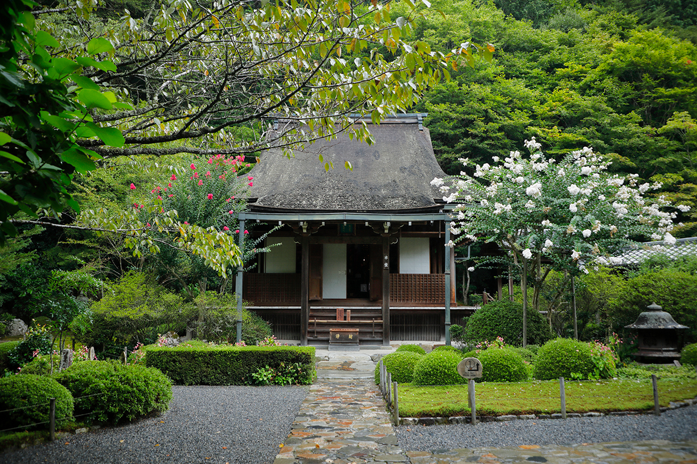
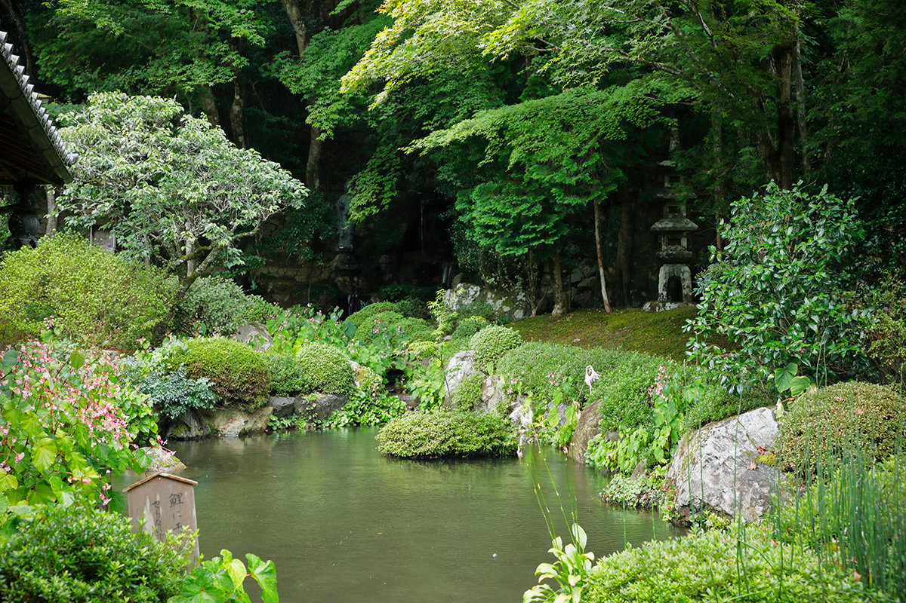
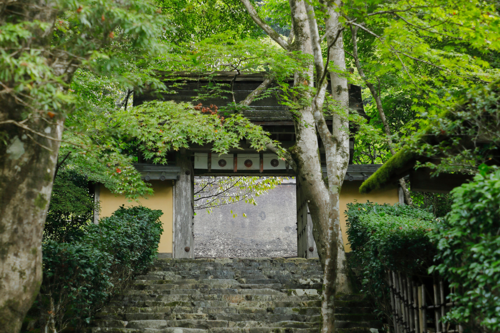
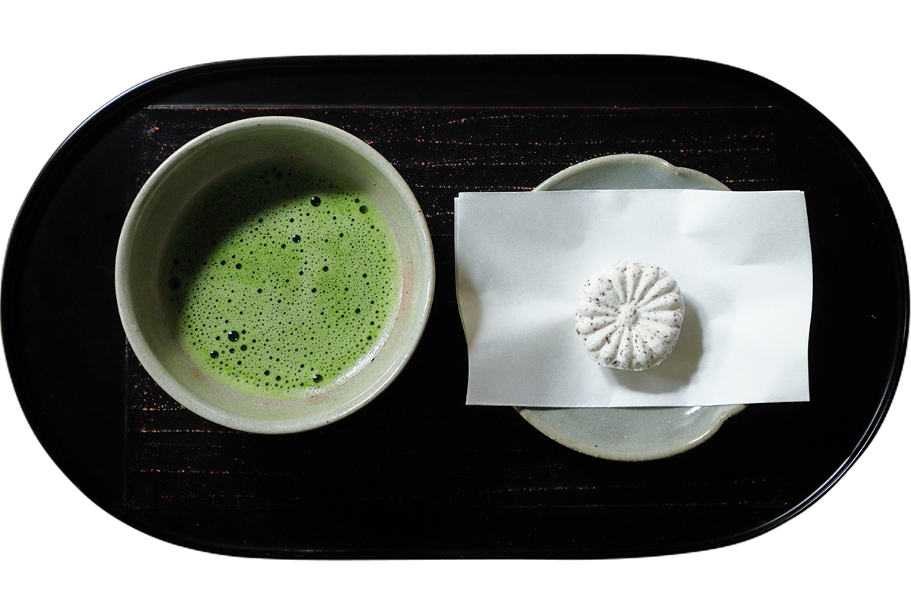
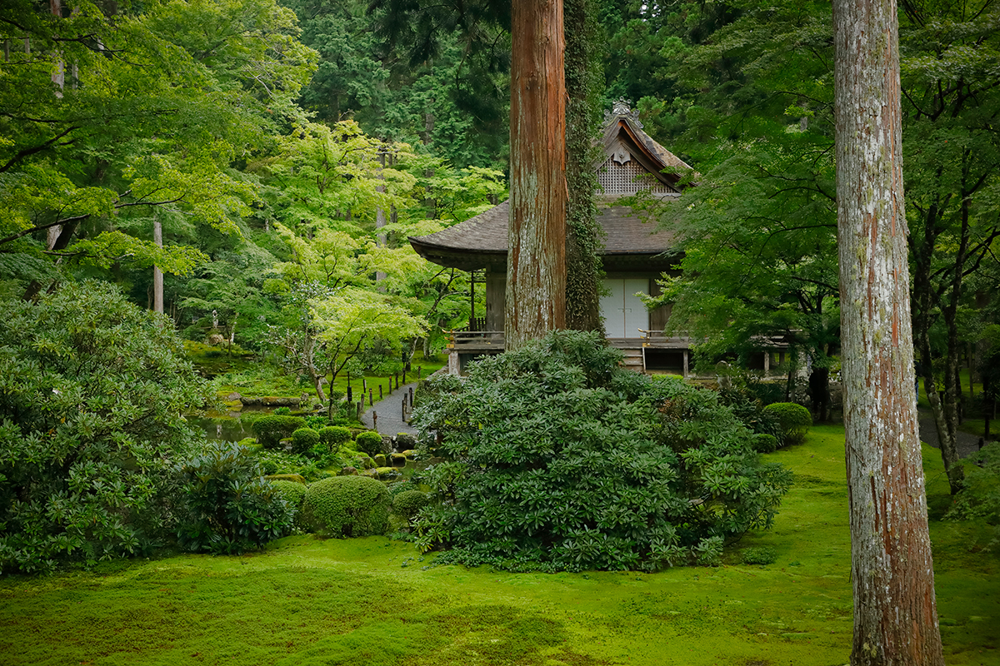
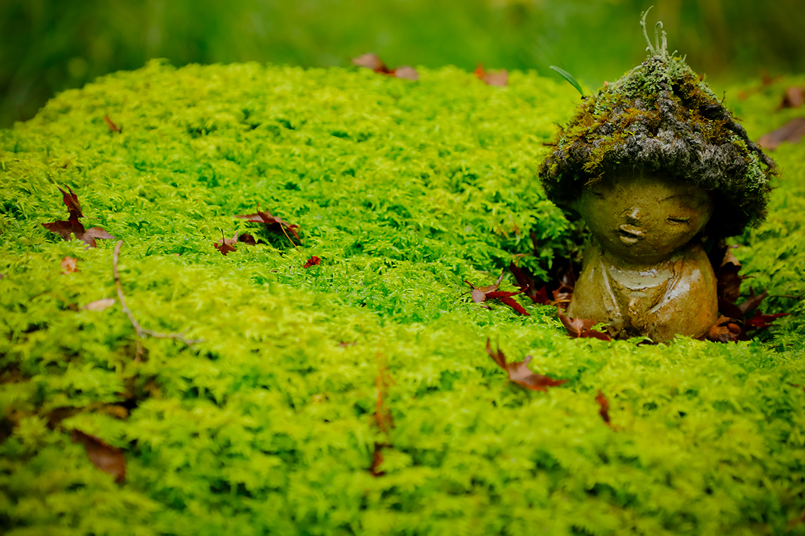
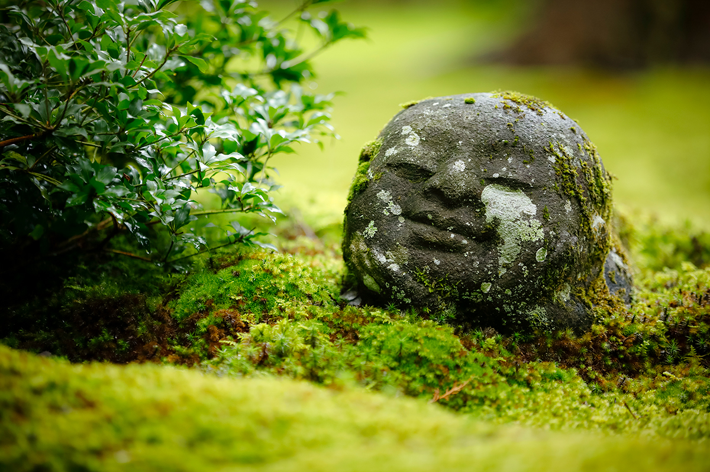
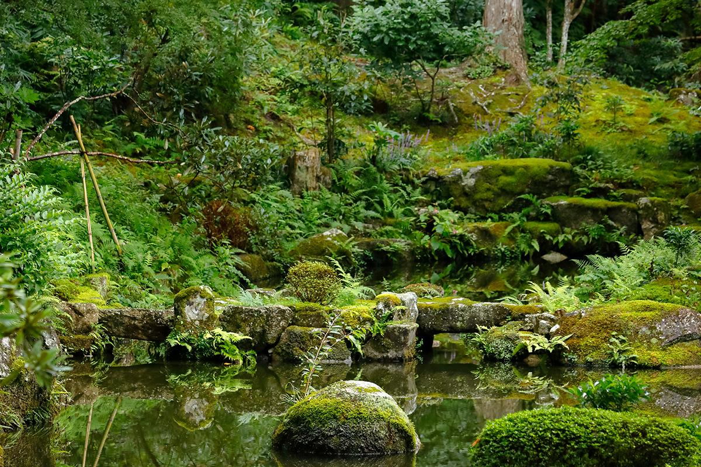
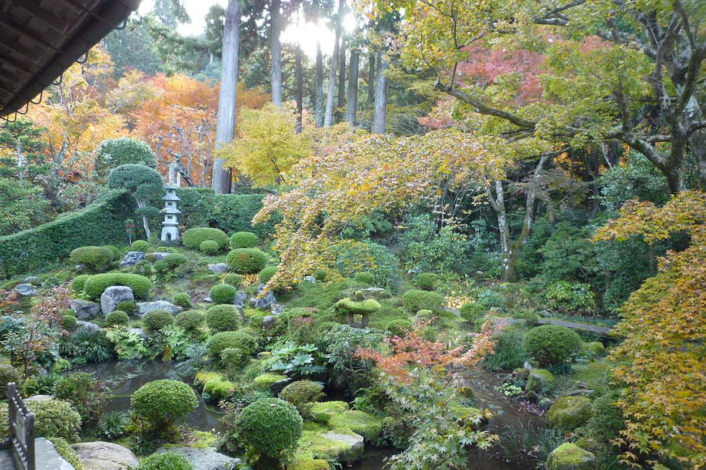

Префектура Киото · Охара · храмы
Охара: храм Дзякко-ин с историей императрицы и сады Сандзэн-ин во мху

После обеда в Охаре стоит пойти к садам, ради которых сюда едут в любое время года. Писатель из Киото выбрал два храма: Дзякко-ин с одной из самых печальных историй японского Средневековья и Сандзэн-ин, без которого в Охару не приезжает никто.
Дзякко-ин
Храм, где жила в изгнании мать императора
Охара это горная деревня в северной части города Киото, около часа на автобусе от центра. Храм Дзякко-ин стоит в самой её глубине, в стороне от дорог. По преданию, его основал больше 1400 лет назад, в начале эпохи Асука, принц Сётоку, чтобы молиться за упокой души своего отца, императора Ёмэя.
Долгие века Дзякко-ин был женским монастырём. Но знаменит он прежде всего грустной историей Токуко, императрицы Кэнрэймон-ин, которая провела здесь последние годы жизни.

Токуко (1155–1213) была дочерью Киёмори Тайры, самого могущественного человека страны в XII веке, и матерью императора Антоку. Она выросла, не зная ни в чём нужды, а героиней трагедии её сделала битва при Данноуре в 1185 году.
«Гордые недолговечны», говорится в старинной «Повести о доме Тайра». Так и вышло. Один за другим умерли император Такакура и Киёмори Тайра, полководец Ёсинака Кисо (1154–1184) выбил род Тайра из столицы, а у Данноуры их окончательно разбил род Минамото. Маленький император Антоку (1178–1185) бросился в море, и Токуко последовала за ним. Но её вытащили из воды враги, воины Минамото.

Остаться в живых, когда погибли сын и весь род, было для неё позором. Жизнь в Киото после возвращения превратилась в постоянную муку. Токуко приняла постриг и ушла в Дзякко-ин. Чтобы утешить её, местные жители принесли ей овощи, засоленные с листьями красной периллы. Считается, что так появился сибадзукэ, одни из самых известных киотоских солений. По словам писателя, если вспомнить по дороге к храму, какими добрыми были люди Охары, прогулка станет ещё глубже.
Однажды в храме случился большой пожар. Главная статуя, бодхисаттва Дзидзо, оказалась в огне, но 3417 маленьких фигурок Дзидзо, сложенных в деревянных ящиках у неё внутри, уцелели. Сегодня их хранят в сокровищнице храма.

Храм Дзякко-ин
- Адрес
- префектура Киото, Киото, район Сакё, Охара Кусао-тё, 676
- Телефон
- +81 75-744-3341
- Часы работы
- 9:00–17:00 (зимой иначе)
- Выходные
- нерегулярно, храм может закрываться на время обрядов
- Цены / Вход
- взрослые 600 иен
- Сайт
- jakkoin.jp
Сандзэн-ин
Сад, на который смотрят с чашкой чая
Второй храм, Сандзэн-ин, писатель называет местом, куда приходит каждый, кто бывает в Охаре. Его история начинается в конце VIII века. Монах Сайтё построил первый зал на горе Хиэй, у восточного комплекса храма Энряку-дзи. С тех пор храм не раз менял место и облик и в годы реставрации Мэйдзи, во второй половине XIX века, переехал в Охару.

Обширная территория храма лежит между двумя речками, Рёгава и Рицугава. Их назвали по ладам «рё» и «рицу» буддийских песнопений сёмё, которые поют монахи. Под ногами здесь мох, над головой деревья, и всё вокруг окутано густой зеленью.
Внутри зала Одзё-гокураку-ин стоит большая скульптурная троица будды Амиды. Чтобы она поместилась, потолок подняли и сделали похожим на перевёрнутое днище лодки. Зал полон торжественности, но в нём всё равно тепло и по-домашнему. А в саду из мха выглядывают маленькие каменные фигурки дзидзо, и на них невозможно смотреть без улыбки.


Будды и жители деревни веками жили здесь бок о бок. Охара лежит далеко от изысканной столицы, и, может быть, именно поэтому деревня так долго сохраняла облик старой Японии. По словам писателя, земля Охары вырастила не только овощи, но и умение принимать гостей. В этом главная причина, почему здесь так много хороших мест, где можно вкусно поесть.

Каждый день в зале Одзё-гокураку-ин служат молебны, и они успокаивают душу. Увидеть храмовые обряды можно и во время осеннего праздника клёнов и праздника Тэндай-э.

Храм Сандзэн-ин
- Адрес
- префектура Киото, Киото, район Сакё, Охара Райгоин-тё, 540
- Телефон
- +81 75-744-2531
- Часы работы
- 9:00–17:00 (в ноябре с 8:30, в декабре–феврале 9:00–16:30)
- Выходные
- нет
- Цены / Вход
- взрослые 700 иен, школьники старших и средних классов 400 иен, младших классов 150 иен
- Сайт
- sanzenin.or.jp
Фото: Макото Ито.